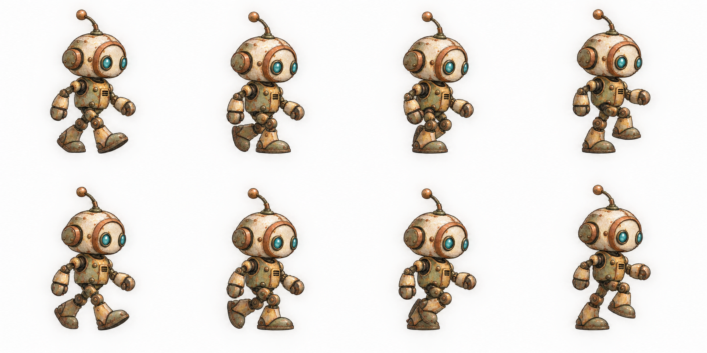

视觉评审 · 等待确认迈步、停步与场景可达范围
以下是动作原画与可走区域的设计预览，尚未修改 Unity 中的移动或碰撞。原画脚底与灯具连续性会在正式切帧时校正。
动作预览
交替触地、重心变化与手臂摆动。正式实现按实际走过的距离推进，撞到阻挡就停步。
展开整张动作设计图

场景可走范围草案
绿色：脚底可走范围红色：物件占地与边界黄色：前方交互站位 / 梯子连接蓝色：看守拟调整路线
辅助范围只供评审，实际游戏中不显示。上方墙面、机器上表面、台阶背后都不当作地面；高处只经梯子到达。
确认后再实现：点击墙面不会走上去；碰到机器底座就停住；交互物件使用前方合法站位；停下时不空走。静态NPC不新增走动路线，看守依然自主行动。
设计说明 · 动作生成提示词